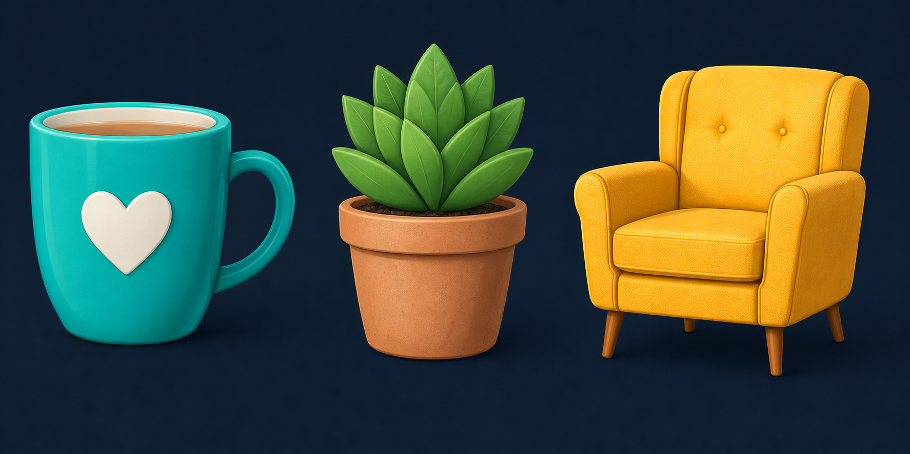
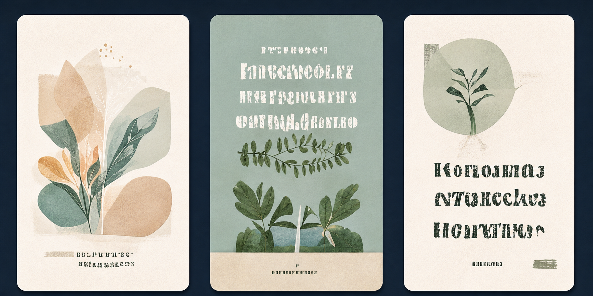

Создать клипарт
Согласованные серии изолированных объектов
 VIBIX Images
Поддержка
VIBIX Images
Поддержка
Массовая генерация изображений
в нейросетях, создание клипартов
и обработка — в одном приложении
Стабильная версия 3.0.5
Для работы требуется действующая лицензия
Выберите задачу — дальше будут показаны только нужные шаги и настройки.

Согласованные серии изолированных объектов

Готовые вертикальные изображения по промптам
Фон, качество, края и метаданные
Создавайте серии изображений по спискам промптов — в том числе согласованные наборы клипартов.
Получайте готовые вертикальные изображения по промптам.
Улучшайте изображения: удаляйте фон, повышайте качество, очищайте края и проверяйте метаданные.
НАЧАЛО РАБОТЫ
Выберите свою операционную систему выше.
Откройте установщик и следуйте инструкциям.
После покупки ключ будет отправлен на вашу почту в течение 24 часов. Запустите приложение и введите его.
Vibix Images развивается — новые возможности и обучающие материалы будут добавляться постепенно.